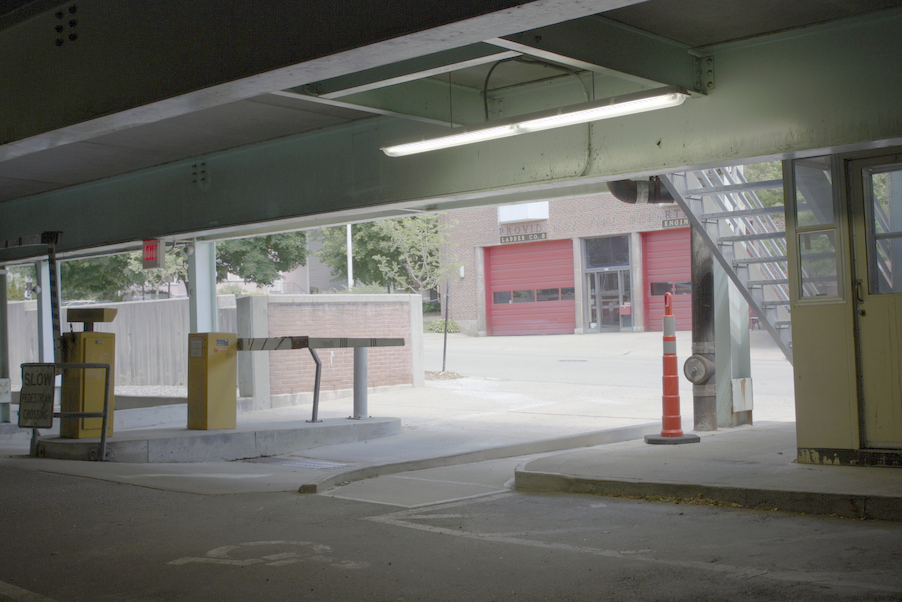

CS129 / Project 5 / HDR
This project aims at generating images with high dynamic range by intelligently combining photographs taken at different exposure levels.
Algorithm
First, a HDR radiance map needs to be constructed from the various images at different exposures to determine how bright a pixel needs to be given its exposure.
There is a function that maps pixel value Zij for pixel i in image j to the unknown scene radiance and known exposure duration: Zij = f(Ei Δ tj). With the algorithms stated in Debevec and Malik 1997, I was able to find g, the function g = ln(f-1) that relates the scene radiance and exposure time in the following equation: g(Zij) = ln(Ei) + ln(tj). This g is then weighted and smoothed to produce the HDR radiance map.
After finding the HDR gradiance map, I needed to do tone-mapping to show the images more clearly. I followed the steps mentioned in Durand 2002, where I used a bilateral filter to split the image into detail and large scale structure. This allowed me to clarify the image without losing the details. In comparison, I also had a simple tone-mapping operator which simply takes the log of the HDR radiance map and normalizes it, and another global tone-mapping operator that simply normalizes the HDR radiance map.
Results
Below I will show the results of the two HDR images created from a collection of varying-exposure images, as well as the construction of the HDR radiance map and various steps of tone-mapping.
| Image of garage at exposure levels of 1/40 seconds, 1/160 seconds, and 1/640 seconds, respectively. |

|
| Recovered relationship between exposure and pixel values: |
| Durand tone-mapping operation overview. From left to right: (1) Grayscale radiance map (2) result of bilateral filtering (3) details that were removed via bilateral filtering. |
| Resulting HDR images created via: (1) Global scaling baseline (2) simple global logarithmic scaling baseline (3) Durand tone-mapping algorithm |
|  |
| Image of bonsai plant at exposure levels of 1/2 seconds, 1/4 seconds, 1/10 seconds, 1/25 seconds, and 1/320 seconds, respectively. |


|
| Recovered relationship between exposure and pixel values: |
| Durand tone-mapping operation overview. From left to right: (1) Grayscale radiance map (2) result of bilateral filtering (3) details that were removed via bilateral filtering. |
| Resulting HDR images created via: (1) Global scaling baseline (2) simple global logarithmic scaling baseline (3) Durand tone-mapping algorithm |
As can be seen from the results shown, the Durand tone-mapping algorithm produces the most vivid results where the details are shown most clearly in a high dynamic range. The algorithm is in general quite successful in producing HDR images.